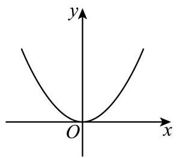
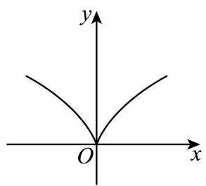
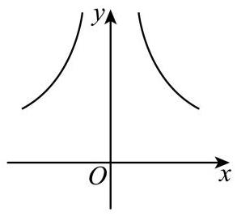
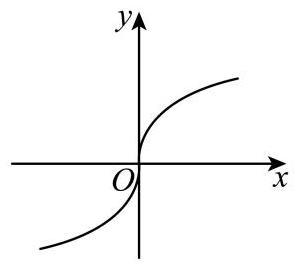
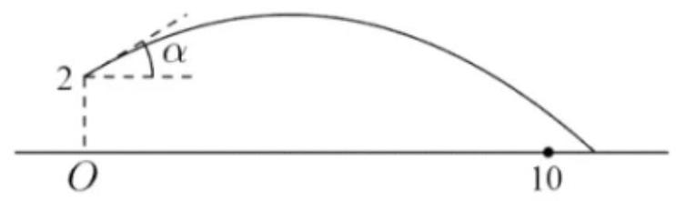
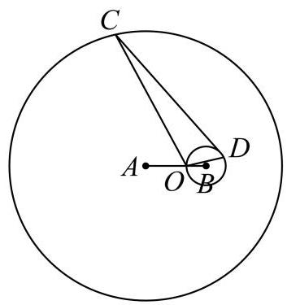
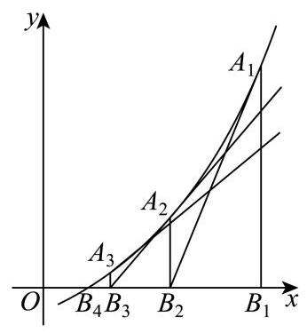

基本函数、分段求值与参数 从定义域、函数类型和分段条件入手，保留参数约束。
奉贤 · 第6题 ★★☆☆☆ · 教师预估 已知函数 y = { x ( x − b ) , x ≥ 0 x ( b x + 1 ) , x < 0 y = \left\{ \begin{array}{l} x\left( {x - b}\right) , x \geq 0 \\ x\left( {{bx} + 1}\right) , x < 0 \end{array}\right. y = { x ( x − b ) , x ≥ 0 x ( b x + 1 ) , x < 0 b = b = b =
宝山 · 第8题 ★★☆☆☆ · 教师预估 若函数 y = f ( x ) y = f\left( x\right) y = f ( x ) R \mathbf{R} R x ≥ 0 x \geq 0 x ≥ 0 f ( x ) = x 2 − 2 x + a ( a ∈ R ) f\left( x\right) = {x}^{2} - {2x} + a\left( {a \in \mathbf{R}}\right) f ( x ) = x 2 − 2 x + a ( a ∈ R ) f ( − 1 ) f\left( {-1}\right) f ( − 1 )
崇明 · 第14题 ★☆☆☆☆ · 教师预估 下列函数中，在 R \mathbf{R} R
A. y = x 2 y = {x}^{2} y = x 2
B. y = ∣ x ∣ y = \left| x\right| y = ∣ x ∣
C. y = sin x y = \sin x y = sin x
D. y = x 3 y = {x}^{3} y = x 3
徐汇 · 第2题 ★☆☆☆☆ · 教师预估 函数 y = 2 x − 1 y = {2}^{x} - 1 y = 2 x − 1
徐汇 · 第5题 ★☆☆☆☆ · 教师预估 若幂函数 y = x a y = {x}^{a} y = x a ( 0 , + ∞ ) \left( {0, + \infty }\right) ( 0 , + ∞ ) a a a
徐汇 · 第13题 ★★☆☆☆ · 教师预估 已知 a 、 b ∈ R a\text{ 、 }b \in \mathbf{R} a 、 b ∈ R ln a > ln b \ln a > \ln b ln a > ln b e a − b > 1 {\mathrm{e}}^{a - b} > 1 e a − b > 1
A. 充分非必要条件
B. 必要非充分条件
C. 充要条件
D. 既非充分又非必要条件
普陀 · 第9题 ★★★☆☆ · 教师预估 已知向量 a → = ( 1 , 2 ) , b → = ( − 1 , 1 ) , c → = ( 3 , 4 ) \overrightarrow{a} = \left( {1,2}\right) ,\overrightarrow{b} = \left( {-1,1}\right) ,\overrightarrow{c} = \left( {3,4}\right) a = ( 1 , 2 ) , b = ( − 1 , 1 ) , c = ( 3 , 4 ) y = f ( x ) y = f\left( x\right) y = f ( x ) f ( x ) = { x + 1 , x < 2 2 x − 1 , x ≥ 2 f\left( x\right) = \left\{ \begin{array}{l} x + 1, x < 2 \\ {2x} - 1, x \geq 2 \end{array}\right. f ( x ) = { x + 1 , x < 2 2 x − 1 , x ≥ 2 d → ( x ) = f ( x ) ⋅ a → + f ( x + 2 ) ⋅ b → \overrightarrow{d}\left( x\right) = f\left( x\right) \cdot \overrightarrow{a} + f\left( {x + 2}\right) \cdot \overrightarrow{b} d ( x ) = f ( x ) ⋅ a + f ( x + 2 ) ⋅ b d → ( x ) / / c → \overrightarrow{d}\left( x\right) //\overrightarrow{c} d ( x ) // c x = x = x =
普陀 · 第14题 ★★★☆☆ · 教师预估 设 x 、 y 、 z ∈ R x\text{ 、 }y\text{ 、 }z \in \mathbf{R} x 、 y 、 z ∈ R 10 x = y − 1 2 = log 3 z {10}^{x} = {y}^{-\frac{1}{2}} = {\log }_{3}z 10 x = y − 2 1 = log 3 z
A. y < x < z y < x < z y < x < z
B. x < y < z x < y < z x < y < z
C. x < z < y x < z < y x < z < y
D. z < y < x z < y < x z < y < x
杨浦 · 第3题 ★☆☆☆☆ · 教师预估 若幂函数 y = x a y = {x}^{a} y = x a ( 3 , 3 3 ) \left( {\sqrt{3},3\sqrt{3}}\right) ( 3 , 3 3 ) a = a = a =
杨浦 · 第6题 ★★☆☆☆ · 教师预估 不等式 3 x + log 2 x < 3 {3}^{x} + {\log }_{2}x < 3 3 x + log 2 x < 3
杨浦 · 第13题 ★☆☆☆☆ · 教师预估 设 a > b a > b a > b
A. 1 a < 1 b \frac{1}{a} < \frac{1}{b} a 1 < b 1
B. a 2 > b 2 {a}^{2} > {b}^{2} a 2 > b 2
C. a 3 > b 3 {a}^{3} > {b}^{3} a 3 > b 3
D. ∣ a ∣ > ∣ b ∣ \left| a\right| > \left| b\right| ∣ a ∣ > ∣ b ∣
松江 · 第7题 ★★☆☆☆ · 教师预估 已知函数 f ( x ) = { 3 x − a , x ≥ 0 b − ( 1 3 ) x , x < 0 f\left( x\right) = \left\{ \begin{matrix} {3}^{x} - a, x \geq 0 \\ b - {\left( \frac{1}{3}\right) }^{x}, x < 0 \end{matrix}\right. f ( x ) = { 3 x − a , x ≥ 0 b − ( 3 1 ) x , x < 0 a + b a + b a + b
松江 · 第9题 ★★★☆☆ · 教师预估 已知函数 y = log a ( x + 2 ) + 1 ( a > 0 且 a ≠ 1 ) y = {\log }_{a}\left( {x + 2}\right) + 1\left( {a > 0\text{ 且 }a \neq 1}\right) y = log a ( x + 2 ) + 1 ( a > 0 且 a = 1 ) ( s , t ) \left( {s, t}\right) ( s , t ) m m m n n n n t − m s = 1 {nt} - {ms} = 1 n t − m s = 1 1 m + 3 n \frac{1}{m} + \frac{3}{n} m 1 + n 3
浦东 · 第3题 ★☆☆☆☆ · 教师预估 本题资料或解析有待核事项，预览不可作为已审定成品。
已知 f ( x ) = { x 1 3 , x < 0 x + 1 , x ≥ 0 f\left( x\right) = \left\{ \begin{array}{l} {x}^{\frac{1}{3}}, x < 0 \\ x + 1, x \geq 0 \end{array}\right. f ( x ) = { x 3 1 , x < 0 x + 1 , x ≥ 0 f ( a ) = − 2 f\left( a\right) = - 2 f ( a ) = − 2 a a a
浦东 · 第14题 ★★☆☆☆ · 教师预估 已知实数 a , b , c a, b, c a , b , c a > b > 1 > c a > b > 1 > c a > b > 1 > c
A. a c > b c {ac} > {bc} a c > b c
B. b c < 1 {b}^{c} < 1 b c < 1
C. log a b + log b a > 2 {\log }_{a}b + {\log }_{b}a > 2 log a b + log b a > 2
D. a + c > b a + c > b a + c > b
金山 · 第3题 ★☆☆☆☆ · 教师预估 将 a a ( a > 0 ) \sqrt{a\sqrt{a}}\left( {a > 0}\right) a a ( a > 0 )
闵行 · 第4题 ★☆☆☆☆ · 教师预估 已知 f ( x ) = ( m − 1 ) x a f\left( x\right) = \left( {m - 1}\right) {x}^{a} f ( x ) = ( m − 1 ) x a y = f ( x ) y = f\left( x\right) y = f ( x ) f ( 3 ) = 27 f\left( 3\right) = {27} f ( 3 ) = 27 f ( m ) = f\left( m\right) = f ( m ) =
静安 · 第13题 ★☆☆☆☆ · 教师预估 函数 y = x 4 3 y = {x}^{\frac{4}{3}} y = x 3 4
A.

B.

C.

D.

奇偶、周期、对称与单调比较 利用结构关系归约自变量范围，注意逻辑方向和反例。
嘉定 · 第11题 ★★★★☆ · 教师预估 本题资料或解析有待核事项，预览不可作为已审定成品。
将函数 y = x 2 , x ∈ [ 0 , 1 ] y = {x}^{2}, x \in \left\lbrack {0,1}\right\rbrack y = x 2 , x ∈ [ 0 , 1 ] θ ( 0 ≤ θ ≤ a ) \theta \left( {0 \leq \theta \leq a}\right) θ ( 0 ≤ θ ≤ a )
C. 若对于每一个角 θ \theta θ C C C a a a
崇明 · 第21题 ★★★★☆ · 教师预估 函数 y = f ( x ) , x ∈ R y = f\left( x\right) , x \in \mathbf{R} y = f ( x ) , x ∈ R x 1 , x 2 ∈ R {x}_{1},{x}_{2} \in \mathbf{R} x 1 , x 2 ∈ R x 1 < x 2 {x}_{1} < {x}_{2} x 1 < x 2 f ( x 1 ) ≥ f ( x 2 ) . f\left( {x}_{1}\right) \geq f\left( {x}_{2}\right) . f ( x 1 ) ≥ f ( x 2 ) .
(1)若 f ( x ) = − x 3 + a x f\left( x\right) = - {x}^{3} + {ax} f ( x ) = − x 3 + a x a a a
( 2 )是否存在函数 y = f ( x ) y = f\left( x\right) y = f ( x ) f ( f ( x ) ) = x f\left( {f\left( x\right) }\right) = x f ( f ( x ) ) = x x ∈ R x \in \mathbf{R} x ∈ R
(3) 设 g ( x ) = sin x g\left( x\right) = \sin x g ( x ) = sin x h ( x ) = f ( x ) + g ( x ) h\left( x\right) = f\left( x\right) + g\left( x\right) h ( x ) = f ( x ) + g ( x ) f ( x ) f\left( x\right) f ( x )
普陀 · 第11题 ★★★★☆ · 教师预估 设定义域为 R \mathbf{R} R y = f ( x ) y = f\left( x\right) y = f ( x ) y = f ′ ( x ) y = {f}^{\prime }\left( x\right) y = f ′ ( x ) g ( x ) = f ′ ( x ) + ( x + x 2 + 1 ) 2 g\left( x\right) = {f}^{\prime }\left( x\right) + {\left( x + \sqrt{{x}^{2} + 1}\right) }^{2} g ( x ) = f ′ ( x ) + ( x + x 2 + 1 ) 2 y = f ( x ) y = f\left( x\right) y = f ( x ) y = g ( x ) y = g\left( x\right) y = g ( x ) f ( x + 2 ) > f ( 2 x − 3 ) f\left( {x + 2}\right) > f\left( {{2x} - 3}\right) f ( x + 2 ) > f ( 2 x − 3 )
普陀 · 第12题 ★★★★☆ · 教师预估 本题资料或解析有待核事项，预览不可作为已审定成品。
设 k ≥ 2 , n ≥ 1 , k , n ∈ N , S n k \geq 2, n \geq 1, k, n \in \mathbf{N},{S}_{n} k ≥ 2 , n ≥ 1 , k , n ∈ N , S n { a n } \left\{ {a}_{n}\right\} { a n } n n n a 1 > 0 {a}_{1} > 0 a 1 > 0 b n = S n + 1 S n {b}_{n} = {S}_{n} + \frac{1}{{S}_{n}} b n = S n + S n 1 k k k n < k n < k n < k b n > b k {b}_{n} > {b}_{k} b n > b k a 1 {a}_{1} a 1
松江 · 第15题 ★★★★☆ · 教师预估 在平面直角坐标系中,如果将函数 y = f ( x ) y = f\left( x\right) y = f ( x ) a a a y = f ( x ) y = f\left( x\right) y = f ( x ) a a a y = a x − 1 x y = {ax} - \frac{1}{x} y = a x − x 1 π 4 \frac{\pi }{4} 4 π a a a
A. -1
B. 0
C. 1
D. 2
浦东 · 第16题 ★★★★★ · 教师预估 定义在 R \mathbf{R} R y = f ( x ) y = f\left( x\right) y = f ( x ) T T T x ∈ R x \in \mathbf{R} x ∈ R f ( x + T ) = T ⋅ f ( x ) f\left( {x + T}\right) = T \cdot f\left( x\right) f ( x + T ) = T ⋅ f ( x ) y = f ( x ) y = f\left( x\right) y = f ( x ) T T T
A. 存在函数 y = k x + b ( k ≠ 0 ) y = {kx} + b\left( {k \neq 0}\right) y = k x + b ( k = 0 ) T T T
B. 若函数 y = f ( x ) y = f\left( x\right) y = f ( x ) T T T T > 1 T > 1 T > 1 [ 0 , T ) \lbrack 0, T) [ 0 , T ) y = f ( x ) y = f\left( x\right) y = f ( x ) [ 0 , + ∞ ) \lbrack 0, + \infty ) [ 0 , + ∞ )
C. 若函数 y = f ( x ) y = f\left( x\right) y = f ( x ) T T T x = 0 x = 0 x = 0 0 < T < 1 0 < T < 1 0 < T < 1
D. 若函数 y = f ( x ) y = f\left( x\right) y = f ( x ) T T T ∣ f ( x ) ∣ ≤ 1 \left| {f\left( x\right) }\right| \leq 1 ∣ f ( x ) ∣ ≤ 1 y = f ( x ) y = f\left( x\right) y = f ( x )
虹口 · 第16题 ★★★★★ · 教师预估 设 y = f ( x ) y = f\left( x\right) y = f ( x ) y = g ( x ) y = g\left( x\right) y = g ( x ) R \mathbf{R} R M = { ( a , b ) ∣ f ( a ) ⟩ g ( b ) , a , b ∈ R } M = \left\{ {\left( {a, b}\right) \mid f\left( a\right) \rangle g\left( b\right) , a, b \in \mathbf{R}}\right\} M = { ( a , b ) ∣ f ( a ) ⟩ g ( b ) , a , b ∈ R }
结论①:若当 ( a , b ) ∈ M \left( {a, b}\right) \in M ( a , b ) ∈ M ( − a , b ) ∈ M \left( {-a, b}\right) \in M ( − a , b ) ∈ M y = f ( x ) y = f\left( x\right) y = f ( x )
结论②:若当 ( a , b ) ∈ M \left( {a, b}\right) \in M ( a , b ) ∈ M ( − a , − b ) ∈ M \left( {-a, - b}\right) \in M ( − a , − b ) ∈ M y = g ( x ) y = g\left( x\right) y = g ( x )
A. ①和②都正确
B. ①正确，②错误
C. ①错误，②正确
D. ①和② 都错误
虹口 · 第19题 ★★★★☆ · 教师预估 设 f ( x ) = e x − e − x f\left( x\right) = {\mathrm{e}}^{x} - {\mathrm{e}}^{-x} f ( x ) = e x − e − x
(1)解不等式: f ( ln x ) < 2 f\left( {\ln x}\right) < 2 f ( ln x ) < 2
(2)设 g ( x ) = f ( x ) + sin 2 x g\left( x\right) = f\left( x\right) + \sin {2x} g ( x ) = f ( x ) + sin 2 x x ∈ [ − 2 , 2 ] x \in \left\lbrack {-2,2}\right\rbrack x ∈ [ − 2 , 2 ] g ( x ) + g ( x 2 + a ) > 0 g\left( x\right) + g\left( {{x}^{2} + a}\right) > 0 g ( x ) + g ( x 2 + a ) > 0 a a a
长宁 · 第13题 ★★☆☆☆ · 教师预估 下列函数中既是奇函数又是增函数的是( )
A. y = x 2 y = {x}^{2} y = x 2
B. y = x 3 y = {x}^{3} y = x 3
C. y = 2 x y = {2}^{x} y = 2 x
D. y = lg x y = \lg x y = lg x
闵行 · 第14题 ★★☆☆☆ · 教师预估 已知定义在 R \mathbf{R} R y = f ( x ) y = f\left( x\right) y = f ( x ) [ 0 , + ∞ ) \lbrack 0, + \infty ) [ 0 , + ∞ ) f ( x − 1 ) > f ( 1 ) f\left( {x - 1}\right) > f\left( 1\right) f ( x − 1 ) > f ( 1 ) x x x
A. ( 0 , 2 ) \left( {0,2}\right) ( 0 , 2 )
B. ( − 2 , 2 ) \left( {-2,2}\right) ( − 2 , 2 )
C. ( − 2 , 0 ) \left( {-2,0}\right) ( − 2 , 0 )
D. ( − 1 , 1 ) \left( {-1,1}\right) ( − 1 , 1 )
闵行 · 第21题 ★★★★★ · 教师预估 对于定义在 R \mathbf{R} R y = f ( x ) y = f\left( x\right) y = f ( x ) ( a , b ) \left( {a, b}\right) ( a , b ) x x x f ( a − x ) ⋅ f ( a + x ) = b f\left( {a - x}\right) \cdot f\left( {a + x}\right) = b f ( a − x ) ⋅ f ( a + x ) = b y = f ( x ) y = f\left( x\right) y = f ( x ) M M M ( a , b ) \left( {a, b}\right) ( a , b ) y = f ( x ) y = f\left( x\right) y = f ( x ) M M M
(1)判断函数 f ( x ) = x f\left( x\right) = x f ( x ) = x g ( x ) = e x g\left( x\right) = {\mathrm{e}}^{x} g ( x ) = e x M M M
(2)是否存在 “ M M M y = f ( x ) y = f\left( x\right) y = f ( x ) y = f ( x ) y = f\left( x\right) y = f ( x ) M M M y = f ( x ) y = f\left( x\right) y = f ( x )
(3)设 f ( x ) > 0 , x ∈ R f\left( x\right) > 0, x \in \mathbf{R} f ( x ) > 0 , x ∈ R y = f ( x ) y = f\left( x\right) y = f ( x ) M M M y = f ( x ) y = f\left( x\right) y = f ( x ) p < q p < q p < q ( p , q ) \left( {p, q}\right) ( p , q ) ( q , p ) \left( {q, p}\right) ( q , p ) y = f ( x ) y = f\left( x\right) y = f ( x ) M M M x 1 {x}_{1} x 1 x 2 {x}_{2} x 2 p < x 1 < x 2 < q p < {x}_{1} < {x}_{2} < q p < x 1 < x 2 < q [ f ( p ) − f ( x 1 ) ] ⋅ [ f ( x 1 ) − f ( x 2 ) ] ⋅ [ f ( x 2 ) − f ( q ) ] > 0 \left\lbrack {f\left( p\right) - f\left( {x}_{1}\right) }\right\rbrack \cdot \left\lbrack {f\left( {x}_{1}\right) - f\left( {x}_{2}\right) }\right\rbrack \cdot \left\lbrack {f\left( {x}_{2}\right) - f\left( q\right) }\right\rbrack > 0 [ f ( p ) − f ( x 1 ) ] ⋅ [ f ( x 1 ) − f ( x 2 ) ] ⋅ [ f ( x 2 ) − f ( q ) ] > 0 y = f ( x ) y = f\left( x\right) y = f ( x ) R \mathbf{R} R
青浦 · 第14题 ★★☆☆☆ · 教师预估 设 f ( x ) f\left( x\right) f ( x ) R \mathbf{R} R 2 < x ≤ 3 2 < x \leq 3 2 < x ≤ 3 f ( x ) = log 2 ( x − 2 ) f\left( x\right) = {\log }_{2}\left( {x - 2}\right) f ( x ) = log 2 ( x − 2 ) f ( − 1 2 ) = f\left( {-\frac{1}{2}}\right) = f ( − 2 1 ) =
A. -1
B. 1
C. 2
D. 3
静安 · 第8题 ★★☆☆☆ · 教师预估 已知定义在 R \mathbf{R} R y = f ( x ) y = f\left( x\right) y = f ( x ) 0 ≤ x ≤ 1 0 \leq x \leq 1 0 ≤ x ≤ 1 f ( x ) = x f\left( x\right) = x f ( x ) = x 7 ≤ x ≤ 8 7 \leq x \leq 8 7 ≤ x ≤ 8 f ( x ) = f\left( x\right) = f ( x ) =
黄浦 · 第15题 ★★★☆☆ · 教师预估 设函数 y = f ( x ) y = f\left( x\right) y = f ( x ) R \mathbf{R} R y = f ( x ) y = f\left( x\right) y = f ( x ) [ 0 , + ∞ ) \lbrack 0, + \infty ) [ 0 , + ∞ ) x 1 , x 2 ∈ R , f ( x 1 ) > f ( x 2 ) ⇒ x 1 2 > x 2 2 {x}_{1},{x}_{2} \in \mathbf{R}, f\left( {x}_{1}\right) > f\left( {x}_{2}\right) \Rightarrow {x}_{1}^{2} > {x}_{2}^{2} x 1 , x 2 ∈ R , f ( x 1 ) > f ( x 2 ) ⇒ x 1 2 > x 2 2 x 1 3 > x 2 3 {x}_{1}^{3} > {x}_{2}^{3} x 1 3 > x 2 3 x 1 , x 2 ∈ R , x 1 2 = x 2 2 ⇒ [ f ( x 1 ) ] 2 = [ f ( x 2 ) ] 2 {x}_{1},{x}_{2} \in \mathbf{R},{x}_{1}^{2} = {x}_{2}^{2} \Rightarrow {\left\lbrack f\left( {x}_{1}\right) \right\rbrack }^{2} = {\left\lbrack f\left( {x}_{2}\right) \right\rbrack }^{2} x 1 , x 2 ∈ R , x 1 2 = x 2 2 ⇒ [ f ( x 1 ) ] 2 = [ f ( x 2 ) ] 2 y = f ( x ) y = f\left( x\right) y = f ( x )
A. ①和②均正确
B. ①正确，②错误
C. ①错误，②正确
D. ①和② 均错误
导数定义、切线与特殊点计算 区分导数定义和几何意义，利用特殊点或系数结构计算。
徐汇 · 第4题 ★☆☆☆☆ · 教师预估 若函数 y = f ( x ) y = f\left( x\right) y = f ( x ) x = x 0 x = {x}_{0} x = x 0 y = 2 x − 1 y = {2x} - 1 y = 2 x − 1 lim h → 0 f ( x 0 + h ) − f ( x 0 ) h = \mathop{\lim }\limits_{{h \rightarrow 0}}\frac{f\left( {{x}_{0} + h}\right) - f\left( {x}_{0}\right) }{h} = h → 0 lim h f ( x 0 + h ) − f ( x 0 ) =
松江 · 第8题 ★★☆☆☆ · 教师预估 若 ( 3 − 2 x ) 6 = a 0 + a 1 x + a 2 x 2 + ⋯ + a 6 x 6 {\left( 3 - 2x\right) }^{6} = {a}_{0} + {a}_{1}x + {a}_{2}{x}^{2} + \cdots + {a}_{6}{x}^{6} ( 3 − 2 x ) 6 = a 0 + a 1 x + a 2 x 2 + ⋯ + a 6 x 6 a 1 + 2 a 2 + 3 a 3 + ⋯ + 6 a 6 = {a}_{1} + 2{a}_{2} + 3{a}_{3} + \cdots + 6{a}_{6} = a 1 + 2 a 2 + 3 a 3 + ⋯ + 6 a 6 =
浦东 · 第6题 ★☆☆☆☆ · 教师预估 已知直线 l l l y = 3 x + 1 + ln x y = \frac{3}{x + 1} + \ln x y = x + 1 3 + ln x x = 2 x = 2 x = 2 l l l
金山 · 第11题 ★★★☆☆ · 教师预估 已知 S n {S}_{n} S n { a n } \left\{ {a}_{n}\right\} { a n } n n n S n = 2 n − 1 − 1 , n ≥ 1 {S}_{n} = {2}^{n - 1} - 1, n \geq 1 S n = 2 n − 1 − 1 , n ≥ 1 n ∈ N n \in \mathrm{N} n ∈ N f ( x ) = ( sin x + a 1 ) ( sin x + a 2 ) ⋯ ( sin x + a 5 ) f\left( x\right) = \left( {\sin x + {a}_{1}}\right) \left( {\sin x + {a}_{2}}\right) \cdots \left( {\sin x + {a}_{5}}\right) f ( x ) = ( sin x + a 1 ) ( sin x + a 2 ) ⋯ ( sin x + a 5 ) f ′ ( π ) = {f}^{\prime }\left( \pi \right) = f ′ ( π ) =
青浦 · 第5题 ★☆☆☆☆ · 教师预估 已知函数 f ( x ) = 1 3 x 3 − x + 3 f\left( x\right) = \frac{1}{3}{x}^{3} - x + 3 f ( x ) = 3 1 x 3 − x + 3 y = f ( x ) y = f\left( x\right) y = f ( x ) ( 0 , f ( 0 ) ) \left( {0, f\left( 0\right) }\right) ( 0 , f ( 0 ) )
零点、极值、最值与含参讨论 用图像及导数定位零点与极值，分清区间端点和最值可达性。
嘉定 · 第8题 ★★☆☆☆ · 教师预估 本题资料或解析有待核事项，预览不可作为已审定成品。
已知函数 y = x 3 + x 2 + a x y = {x}^{3} + {x}^{2} + {ax} y = x 3 + x 2 + a x a a a
奉贤 · 第16题 ★★★★☆ · 教师预估 已知函数 y = f ( x ) y = f\left( x\right) y = f ( x ) f ( x ) = ( x − 1 ) ( x − a ) ( x − b ) , x ∈ R f\left( x\right) = \left( {x - 1}\right) \left( {x - a}\right) \left( {x - b}\right) , x \in \mathbf{R} f ( x ) = ( x − 1 ) ( x − a ) ( x − b ) , x ∈ R
A. 函数 y = f ( x ) y = f\left( x\right) y = f ( x )
B. 若集合 A = { x ∣ f ( x ) ≥ 0 } A = \{ x \mid f\left( x\right) \geq 0\} A = { x ∣ f ( x ) ≥ 0 } [ 0 , + ∞ ) \lbrack 0, + \infty ) [ 0 , + ∞ ) ( a , b ) \left( {a, b}\right) ( a , b )
C. 函数 y = f ( x ) y = f\left( x\right) y = f ( x )
D. 函数 y = f ( x ) y = f\left( x\right) y = f ( x ) ( b , 0 ) \left( {b,0}\right) ( b , 0 ) y = 0 y = 0 y = 0 b = 1 b = 1 b = 1
宝山 · 第18题 ★★★☆☆ · 教师预估 已知 f ( x ) = log a x , g ( x ) = 2 log a ( 2 x + t − 2 ) , ( a > 0 , a ≠ 1 , t ∈ R ) f\left( x\right) = {\log }_{a}x, g\left( x\right) = 2{\log }_{a}\left( {{2x} + t - 2}\right) ,\left( {a > 0, a \neq 1, t \in \mathbf{R}}\right) f ( x ) = log a x , g ( x ) = 2 log a ( 2 x + t − 2 ) , ( a > 0 , a = 1 , t ∈ R )
(1) 若 f ( 1 ) = g ( 2 ) f\left( 1\right) = g\left( 2\right) f ( 1 ) = g ( 2 ) t t t
(2)当 x ∈ [ 1 , 4 ] x \in \left\lbrack {1,4}\right\rbrack x ∈ [ 1 , 4 ] f ( x ) ≥ g ( x ) f\left( x\right) \geq g\left( x\right) f ( x ) ≥ g ( x ) t t t
宝山 · 第20题 ★★★★☆ · 教师预估 将以坐标原点为顶点,以 x x x P ( 1 , 1 ) P\left( {1,1}\right) P ( 1 , 1 ) C C C C C C A ( x 1 , y 1 ) 、 B ( x 2 , y 2 ) A\left( {{x}_{1},{y}_{1}}\right) \text{ 、 }B\left( {{x}_{2},{y}_{2}}\right) A ( x 1 , y 1 ) 、 B ( x 2 , y 2 ) P A 、 P B {PA}\text{ 、 }{PB} P A 、 PB k P A 、 k P B {k}_{PA}\text{ 、 }{k}_{PB} k P A 、 k PB k P A + k P B = 0. {k}_{PA} + {k}_{PB} = 0. k P A + k PB = 0.
(1)求抛物线 C C C
(2)证明:直线 A B {AB} A B k A B = − 1 2 {k}_{AB} = - \frac{1}{2} k A B = − 2 1
(3)若直线 A B {AB} A B y y y b ∈ [ 0 , 1 ] b \in \left\lbrack {0,1}\right\rbrack b ∈ [ 0 , 1 ] △ A B P \bigtriangleup {ABP} △ A BP
崇明 · 第16题 ★★★★★ · 教师预估 本题资料或解析有待核事项，预览不可作为已审定成品。
已知函数 y = f ( x ) , x ∈ R y = f\left( x\right) , x \in \mathbf{R} y = f ( x ) , x ∈ R M = { x 0 ∣ M = \left\{ {x}_{0}\right| M = { x 0 ∣ x > x 0 x > {x}_{0} x > x 0 f ( x ) ≤ f ( x 0 ) } f\left( x\right) \leq f\left( {x}_{0}\right) \} f ( x ) ≤ f ( x 0 ) } M = [ − 1 , 2 ] M = \left\lbrack {-1,2}\right\rbrack M = [ − 1 , 2 ] y = f ( x ) y = f\left( x\right) y = f ( x ) y = f ( x ) y = f\left( x\right) y = f ( x ) x = − 2 x = - 2 x = − 2 y = f ( x ) y = f\left( x\right) y = f ( x )
A. ①②都真
B. ①真②假
C. ①假②真
D. ①②都假
崇明 · 第19题 ★★★☆☆ · 教师预估 设函数 f ( x ) = x 2 − x + a ln x , a ∈ R f\left( x\right) = {x}^{2} - x + a\ln x, a \in \mathbf{R} f ( x ) = x 2 − x + a ln x , a ∈ R
(1) 若 a = 1 a = 1 a = 1 f ( x ) f\left( x\right) f ( x ) x = 1 x = 1 x = 1
(2)若 f ( x ) ≥ 0 f\left( x\right) \geq 0 f ( x ) ≥ 0 [ 1 , + ∞ ) \lbrack 1, + \infty ) [ 1 , + ∞ ) a a a
徐汇 · 第15题 ★★★★☆ · 教师预估 设 ω > 0 \omega > 0 ω > 0 y = 3 2 cos ω x + 1 2 sin ω x y = \frac{\sqrt{3}}{2}\cos {\omega x} + \frac{1}{2}\sin {\omega x} y = 2 3 cos ω x + 2 1 sin ω x ( π 2 , π ) \left( {\frac{\pi }{2},\pi }\right) ( 2 π , π ) ω \omega ω
A. ( 0 , 1 2 ] \left( {0,\frac{1}{2}}\right\rbrack ( 0 , 2 1 ]
B. [ 1 3 , 1 2 ] \left\lbrack {\frac{1}{3},\frac{1}{2}}\right\rbrack [ 3 1 , 2 1 ]
C. ( 0 , 1 6 ] ∪ [ 1 3 , 7 6 ] \left( {0,\frac{1}{6}}\right\rbrack \cup \left\lbrack {\frac{1}{3},\frac{7}{6}}\right\rbrack \; ( 0 , 6 1 ] ∪ [ 3 1 , 6 7 ]
D. ( 0 , 1 6 ] ∪ [ 1 3 , 1 2 ] \left( {0,\frac{1}{6}}\right\rbrack \cup \left\lbrack {\frac{1}{3},\frac{1}{2}}\right\rbrack ( 0 , 6 1 ] ∪ [ 3 1 , 2 1 ]
徐汇 · 第19题 ★★★★☆ · 教师预估 已知函数 y = f ( x ) y = f\left( x\right) y = f ( x ) f ( x ) = 2 a − 1 + g ( x ) a − g ( x ) , a ∈ R f\left( x\right) = \frac{{2a} - 1 + g\left( x\right) }{a - g\left( x\right) }, a \in \mathbf{R} f ( x ) = a − g ( x ) 2 a − 1 + g ( x ) , a ∈ R a > 0 a > 0 a > 0
(1)设 g ( x ) = 2 x g\left( x\right) = {2}^{x} g ( x ) = 2 x y = f ( x ) y = f\left( x\right) y = f ( x ) a a a y = f ( x ) y = f\left( x\right) y = f ( x )
(2)设 g ( x ) = log 2 x g\left( x\right) = {\log }_{2}x g ( x ) = log 2 x x x x f ( x ) = g ( x ) f\left( x\right) = g\left( x\right) f ( x ) = g ( x ) a a a
普陀 · 第21题 ★★★★★ · 教师预估 已知 p 、 q p\text{ 、 }q p 、 q y = f ( x ) y = f\left( x\right) y = f ( x ) f ( p ) f\left( p\right) f ( p ) y = g ( x ) y = g\left( x\right) y = g ( x ) g ( q ) g\left( q\right) g ( q ) f ( p ) = g ( q ) f\left( p\right) = g\left( q\right) f ( p ) = g ( q ) p ≠ q p \neq q p = q y = f ( x ) y = f\left( x\right) y = f ( x ) y = g ( x ) y = g\left( x\right) y = g ( x ) T T T
(1)设函数 y = f ( x ) y = f\left( x\right) y = f ( x ) f ( x ) = sin x f\left( x\right) = \sin x f ( x ) = sin x y = g ( x ) y = g\left( x\right) y = g ( x ) g ( x ) = cos x g\left( x\right) = \cos x g ( x ) = cos x y = f ( x ) y = f\left( x\right) y = f ( x ) y = g ( x ) y = g\left( x\right) y = g ( x ) T T T
(2)设 a 、 b a\text{ 、 }b a 、 b y = f ( x ) y = f\left( x\right) y = f ( x ) f ( x ) = x 2 + 2 ( a − 1 ) x + a 2 − 2 a + 7 f\left( x\right) = {x}^{2} + 2\left( {a - 1}\right) x + {a}^{2} - {2a} + 7 f ( x ) = x 2 + 2 ( a − 1 ) x + a 2 − 2 a + 7 y = g ( x ) y = g\left( x\right) y = g ( x ) g ( x ) = b x + 9 b x ( x > 0 ) g\left( x\right) = {bx} + \frac{9}{bx}\left( {x > 0}\right) g ( x ) = b x + b x 9 ( x > 0 ) y = f ( x ) y = f\left( x\right) y = f ( x ) y = g ( x ) y = g\left( x\right) y = g ( x ) T T T 1 a + b \frac{1}{a} + b a 1 + b
(3) 设 k 、 t 、 a k\text{ 、 }t\text{ 、 }a k 、 t 、 a y = f ( x ) y = f\left( x\right) y = f ( x ) f ( x ) = − e k t + x − 2 k t ( x ≤ 0 ) f\left( x\right) = - {\mathrm{e}}^{{kt} + x} - {2kt}\left( {x \leq 0}\right) f ( x ) = − e k t + x − 2 k t ( x ≤ 0 ) y = g ( x ) y = g\left( x\right) y = g ( x ) g ( x ) = ( x − 2 ) ln x − a x − 2 g\left( x\right) = \left( {x - 2}\right) \ln x - {ax} - 2 g ( x ) = ( x − 2 ) ln x − a x − 2 t ∈ ( 1 , e 2 ) t \in \left( {1,{\mathrm{e}}^{2}}\right) t ∈ ( 1 , e 2 ) x ∈ ( 0 , + ∞ ) x \in \left( {0, + \infty }\right) x ∈ ( 0 , + ∞ ) g ( x ) ≥ g ( t ) g\left( x\right) \geq g\left( t\right) g ( x ) ≥ g ( t ) y = f ( x ) y = f\left( x\right) y = f ( x ) y = g ( x ) y = g\left( x\right) y = g ( x ) T T T k k k
杨浦 · 第11题 ★★★★☆ · 教师预估 掷实心球时，将轨迹视为抛物线的一部分，设实心球离手位置在起掷点 O O O a a a a a a 0.1 ∘ {0.1}^{ \circ } 0.1 ∘

杨浦 · 第15题 ★★★☆☆ · 教师预估 已知函数 y = f ( x ) y = f\left( x\right) y = f ( x ) y = g ( x ) y = g\left( x\right) y = g ( x ) R \mathbf{R} R y = f ( x ) y = f\left( x\right) y = f ( x ) y = g ( x ) y = g\left( x\right) y = g ( x ) x = 0 x = 0 x = 0 x ≠ 0 x \neq 0 x = 0 f ( x ) < g ( x ) f\left( x\right) < g\left( x\right) f ( x ) < g ( x )
A. 0 是 y = f ( x ) y = f\left( x\right) y = f ( x ) y = g ( x ) y = g\left( x\right) y = g ( x )
B. 0 是 y = f ( x ) y = f\left( x\right) y = f ( x ) y = g ( x ) y = g\left( x\right) y = g ( x )
C. 0 是 y = f ( x ) y = f\left( x\right) y = f ( x ) y = g ( x ) y = g\left( x\right) y = g ( x )
D. 0是 y = f ( x ) y = f\left( x\right) y = f ( x ) y = g ( x ) y = g\left( x\right) y = g ( x )
浦东 · 第18题 ★★★★☆ · 教师预估 已知 f ( x ) = 3 sin x + 2 cos ( x + φ ) f\left( x\right) = \sqrt{3}\sin x + 2\cos \left( {x + \varphi }\right) f ( x ) = 3 sin x + 2 cos ( x + φ ) φ ∈ [ 0 , π ] \varphi \in \left\lbrack {0,\pi }\right\rbrack φ ∈ [ 0 , π ]
(1)若函数 y = f ( x ) y = f\left( x\right) y = f ( x ) R \mathrm{R} R φ \varphi φ
(2)若 φ = π 3 \varphi = \frac{\pi }{3} φ = 3 π x x x f ( x ) + x 2 − a > 0 f\left( x\right) + \frac{x}{2} - a > 0 f ( x ) + 2 x − a > 0 x ∈ [ 0 , π ] x \in \left\lbrack {0,\pi }\right\rbrack x ∈ [ 0 , π ] a a a
金山 · 第19题 ★★★★☆ · 教师预估 已知函数 y = f ( x ) y = f\left( x\right) y = f ( x ) f ( x ) = ln x f\left( x\right) = \ln x f ( x ) = ln x
(1)若 f ( 1 − m ) − f ( 3 − m ) < 0 f\left( {1 - m}\right) - f\left( {3 - m}\right) < 0 f ( 1 − m ) − f ( 3 − m ) < 0 m m m
( 2 )若 g ( x ) = a x − 1 x − a + 1 − ( a + 1 ) f ( x ) g\left( x\right) = {ax} - \frac{1}{x} - a + 1 - \left( {a + 1}\right) f\left( x\right) g ( x ) = a x − x 1 − a + 1 − ( a + 1 ) f ( x ) a > 0 a > 0 a > 0 b < 0 b < 0 b < 0 y = b y = b y = b y = g ( x ) y = g\left( x\right) y = g ( x ) a a a
金山 · 第20题 ★★★★★ · 教师预估 已知抛物线 Γ : y 2 = 4 x \Gamma : {y}^{2} = {4x} Γ : y 2 = 4 x F F F l l l P ( x 0 , y 0 ) P\left( {{x}_{0},{y}_{0}}\right) P ( x 0 , y 0 ) O O O
(1)若 ∣ O P ∣ = ∣ P F ∣ \left| {OP}\right| = \left| {PF}\right| ∣ OP ∣ = ∣ PF ∣ P P P
(2)若直线 l 0 : y = k x + 4 {l}_{0} : y = {kx} + 4 l 0 : y = k x + 4 Γ \Gamma Γ l 0 {l}_{0} l 0
(3)若 x 0 > 3 {x}_{0} > 3 x 0 > 3 P P P C : ( x − 1 ) 2 + y 2 = 4 C : {\left( x - 1\right) }^{2} + {y}^{2} = 4 C : ( x − 1 ) 2 + y 2 = 4 l l l A 、 B A\text{ 、 }B A 、 B ∣ A B ∣ \left| {AB}\right| ∣ A B ∣
长宁 · 第16题 ★★★★☆ · 教师预估 已知 f ( x ) = ( 1 − a ) x + a sin x f\left( x\right) = \left( {1 - a}\right) x + a\sin x f ( x ) = ( 1 − a ) x + a sin x
① 存在 a ∈ ( 0 , 1 ) a \in \left( {0,1}\right) a ∈ ( 0 , 1 ) y = f ( x ) y = f\left( x\right) y = f ( x ) R \mathbf{R} R
②对于任意 a ∈ ( 0 , 1 ) a \in \left( {0,1}\right) a ∈ ( 0 , 1 ) y = ( 1 − a ) x + a y = \left( {1 - a}\right) x + a y = ( 1 − a ) x + a y = f ( x ) y = f\left( x\right) y = f ( x ) y = f ( x ) y = f\left( x\right) y = f ( x )
对于以上两个结论, 下列判断正确的是 ( )
A. ①正确，②错误；
B. ①错误，②正确；
C. ①正确，②正确；
D. ①错误，②错误.
长宁 · 第19题 ★★★★☆ · 教师预估 已知 f ( x ) = log a x f\left( x\right) = {\log }_{a}x f ( x ) = log a x a > 0 , a ≠ 1 a > 0, a \neq 1 a > 0 , a = 1
(1)若函数 y = f ( x ) y = f\left( x\right) y = f ( x ) ( 2 , − 1 ) \left( {2, - 1}\right) ( 2 , − 1 ) f ( 2 x − 1 ) > f ( x + 1 ) f\left( {{2x} - 1}\right) > f\left( {x + 1}\right) f ( 2 x − 1 ) > f ( x + 1 )
( 2 )若恰有两个不同的实数 x x x f ( x ) f\left( x\right) f ( x ) f ( x − m ) f\left( {x - m}\right) f ( x − m ) f ( 4 ) f\left( 4\right) f ( 4 ) m m m
闵行 · 第11题 ★★★★☆ · 教师预估 已知 a ∈ R a \in \mathbf{R} a ∈ R ( ln x − 1 ) ( ln x − a x ) > 0 \left( {\ln x - 1}\right) \left( {\ln x - {ax}}\right) > 0 ( ln x − 1 ) ( ln x − a x ) > 0 a a a
闵行 · 第19题 ★★★☆☆ · 教师预估 已知 m ∈ R , f ( x ) = m sin x + ( 1 − m ) cos x m \in \mathbf{R}, f\left( x\right) = m\sin x + \left( {1 - m}\right) \cos x m ∈ R , f ( x ) = m sin x + ( 1 − m ) cos x
(1) 当 m = 1 2 m = \frac{1}{2} m = 2 1 f ( x ) = 0 f\left( x\right) = 0 f ( x ) = 0
( 2 )若函数 y = f ( x ) y = f\left( x\right) y = f ( x ) ( 0 , π 2 ) \left( {0,\frac{\pi }{2}}\right) ( 0 , 2 π ) m m m
静安 · 第12题 ★★★★☆ · 教师预估 设 a > 0 a > 0 a > 0 f ( x ) = { x + 2 , x < − a a 2 − x 2 , − a ≤ x ≤ a − x − 1 , x > a f\left( x\right) = \left\{ \begin{array}{l} x + 2, x < - a \\ \sqrt{{a}^{2} - {x}^{2}}, - a \leq x \leq a \\ - \sqrt{x} - 1, x > a \end{array}\right. f ( x ) = ⎩ ⎨ ⎧ x + 2 , x < − a a 2 − x 2 , − a ≤ x ≤ a − x − 1 , x > a
① y = f ( x ) y = f\left( x\right) y = f ( x ) ( a − 1 , + ∞ ) \left( {a - 1, + \infty }\right) ( a − 1 , + ∞ )
② 当 a ≥ 1 a \geq 1 a ≥ 1 y = f ( x ) y = f\left( x\right) y = f ( x )
③ 设 M ( x 1 , f ( x 1 ) ) ( x 1 ≤ a ) , N ( x 2 , f ( x 2 ) ) ( x 2 > a ) M\left( {{x}_{1}, f\left( {x}_{1}\right) }\right) \left( {{x}_{1} \leq a}\right) , N\left( {{x}_{2}, f\left( {x}_{2}\right) }\right) \left( {{x}_{2} > a}\right) M ( x 1 , f ( x 1 ) ) ( x 1 ≤ a ) , N ( x 2 , f ( x 2 ) ) ( x 2 > a ) ∣ M N ∣ > 1 \left| {MN}\right| > 1 ∣ MN ∣ > 1
其中所有正确结论的序号是___.
静安 · 第21题 ★★★★★ · 教师预估 已知函数 f ( x ) = a ln x x ( a ∈ R 且 a ≠ 0 ) f\left( x\right) = \frac{a\ln x}{x}\;\left( {a \in \mathbf{R}\text{ 且 }a \neq 0}\right) f ( x ) = x a l n x ( a ∈ R 且 a = 0 )
(1)当 a = 1 a = 1 a = 1 y = f ( x ) y = f\left( x\right) y = f ( x )
(2)若直线 y = x − 1 y = x - 1 y = x − 1 y = f ( x ) y = f\left( x\right) y = f ( x ) a a a
(3) 若函数 g ( x ) = a 2 4 x + x + 2 − a g\left( x\right) = \frac{{a}^{2}}{4x} + x + 2 - a g ( x ) = 4 x a 2 + x + 2 − a y = f ( x ) y = f\left( x\right) y = f ( x ) A A A B B B a a a
黄浦 · 第12题 ★★★★☆ · 教师预估 如图所示，某圆形游乐园的半径为 140 米，其圆心在点 A A A A A A B B B A A A B B B O O O C , D C, D C , D △ O C D \bigtriangleup {OCD} △ OC D

抽象函数、迭代与导数不等式证明 把新定义转化为具体函数关系，检验值域、不动点、增量与全域约束。
嘉定 · 第21题 ★★★★★ · 教师预估 本题资料或解析有待核事项，预览不可作为已审定成品。
已知在神经网络中, σ ( x ) = 1 1 + e − x \sigma \left( x\right) = \frac{1}{1 + {\mathrm{e}}^{-x}} σ ( x ) = 1 + e − x 1
(1)证明:对任意实数 x x x σ ( − x ) + σ ( x ) = 1 \sigma \left( {-x}\right) + \sigma \left( x\right) = 1 σ ( − x ) + σ ( x ) = 1 y = σ ( x ) y = \sigma \left( x\right) y = σ ( x )
(2)设交叉熵损失函数 L t ( y ^ ) = − [ t ln y ^ + ( 1 − t ) ln ( 1 − y ^ ) ] {L}_{t}\left( \widehat{y}\right) = - \left\lbrack {t\ln \widehat{y} + \left( {1 - t}\right) \ln \left( {1 - \widehat{y}}\right) }\right\rbrack L t ( y ) = − [ t ln y + ( 1 − t ) ln ( 1 − y ) ] y ^ \widehat{y} y t t t t ∈ { 0 , 1 } t \in \{ 0,1\} t ∈ { 0 , 1 } t t t z = L t ( σ ( x ) ) z = {L}_{t}\left( {\sigma \left( x\right) }\right) z = L t ( σ ( x ) ) ( − ∞ , + ∞ ) \left( {-\infty , + \infty }\right) ( − ∞ , + ∞ )
(3)在深度神经网络中，信号经过多层传播可抽象为一个迭代过程. 设数列 { x n } \left\{ {x}_{n}\right\} { x n } x n + 1 = σ ( x n ) {x}_{n + 1} = \sigma \left( {x}_{n}\right) x n + 1 = σ ( x n ) n n n A ∈ ( 0 , 1 ) A \in \left( {0,1}\right) A ∈ ( 0 , 1 ) σ ( A ) = A \sigma \left( A\right) = A σ ( A ) = A X 1 {X}_{1} X 1 n n n ∣ x n + 2 − A ∣ ≤ ( 1 4 ) n \left| {{x}_{n + 2} - A}\right| \leq {\left( \frac{1}{4}\right) }^{n} ∣ x n + 2 − A ∣ ≤ ( 4 1 ) n
奉贤 · 第21题 ★★★★★ · 教师预估 原题给定的定义域与零点存在性陈述冲突，后续小问又使用了冲突的参数情形，须核原始版本。
设定义域为 ( 0 , + ∞ ) \left( {0, + \infty }\right) ( 0 , + ∞ ) y = f ( x ) y = f\left( x\right) y = f ( x ) f ( x ) = e x − a ( a > 0 ) f\left( x\right) = {\mathrm{e}}^{x} - a\left( {a > 0}\right) f ( x ) = e x − a ( a > 0 ) y = f ( x ) y = f\left( x\right) y = f ( x ) r r r A 1 ( x 1 , f ( x 1 ) ) {A}_{1}\left( {{x}_{1}, f\left( {x}_{1}\right) }\right) A 1 ( x 1 , f ( x 1 ) ) y = f ( x ) y = f\left( x\right) y = f ( x ) l 1 {l}_{1} l 1 x x x B 2 {B}_{2} B 2 x 2 {x}_{2} x 2 x 2 > r {x}_{2} > r x 2 > r A 2 ( x 2 , f ( x 2 ) ) {A}_{2}\left( {{x}_{2}, f\left( {x}_{2}\right) }\right) A 2 ( x 2 , f ( x 2 ) ) y = f ( x ) y = f\left( x\right) y = f ( x ) l 2 {l}_{2} l 2 x x x B 3 {B}_{3} B 3 x 3 {x}_{3} x 3 x 2 ≤ r {x}_{2} \leq r x 2 ≤ r ⋯ \cdots ⋯ { x n } ( n ≥ 1 , n ∈ N ) \left\{ {x}_{n}\right\} \left( {n \geq 1, n \in \mathbf{N}}\right) { x n } ( n ≥ 1 , n ∈ N ) x 1 = t , t > r {x}_{1} = t, t > r x 1 = t , t > r

(1) 若 a = e , t = 2 a = \mathrm{e}, t = 2 a = e , t = 2 x 2 {x}_{2} x 2
(2)求证:数列 { x n } \left\{ {x}_{n}\right\} { x n }
(3) 若 a = 1 a = 1 a = 1 x n + 1 + 1 {x}_{n + 1} + 1 x n + 1 + 1 x n − ln x n {x}_{n} - \ln {x}_{n} x n − ln x n
宝山 · 第21题 ★★★★★ · 教师预估 本题资料或解析有待核事项，预览不可作为已审定成品。
已知 y = f ( x ) y = f\left( x\right) y = f ( x ) y = g ( x ) y = g\left( x\right) y = g ( x ) R \mathbf{R} R y = f ( x ) y = f\left( x\right) y = f ( x ) f 1 ( x ) = f ( x ) , f n + 1 ( x ) = f n ′ ( x ) ( n 是正整数 ) . {f}_{1}\left( x\right) = f\left( x\right) ,{f}_{n + 1}\left( x\right) = {f}_{n}^{\prime }\left( x\right) \;\left( {n\text{ 是正整数 }}\right) . f 1 ( x ) = f ( x ) , f n + 1 ( x ) = f n ′ ( x ) ( n 是正整数 ) .
(1)若 f ( x ) = e a x + b cos x f\left( x\right) = {\mathrm{e}}^{ax} + b\cos x f ( x ) = e a x + b cos x f 3 ( x ) = f 1 ( x ) {f}_{3}\left( x\right) = {f}_{1}\left( x\right) f 3 ( x ) = f 1 ( x ) a a a b b b
(2)设数列 { a n } \left\{ {a}_{n}\right\} { a n } f ( x ) = x − cos x f\left( x\right) = x - \cos x f ( x ) = x − cos x a 1 = a , a n + 1 = f 2 ( a n ) {a}_{1} = a,{a}_{n + 1} = {f}_{2}\left( {a}_{n}\right) a 1 = a , a n + 1 = f 2 ( a n ) a a a { a n } \left\{ {a}_{n}\right\} { a n }
(3) 若 y = f n ( x ) ( n ≤ 2 ) y = {f}_{n}\left( x\right) \left( {n \leq 2}\right) y = f n ( x ) ( n ≤ 2 ) y = g ( x ) y = g\left( x\right) y = g ( x ) x 0 ∈ R {x}_{0} \in \mathbf{R} x 0 ∈ R x x x g ( x 0 ) ≥ g ( x ) > 0 g\left( {x}_{0}\right) \geq g\left( x\right) > 0 g ( x 0 ) ≥ g ( x ) > 0 f n ( x ) = 0 ( n ≥ 3 ) {f}_{n}\left( x\right) = 0\left( {n \geq 3}\right) f n ( x ) = 0 ( n ≥ 3 ) y = f 2 ( x ) ⋅ g ( x ) y = {f}_{2}\left( x\right) \cdot g\left( x\right) y = f 2 ( x ) ⋅ g ( x )
徐汇 · 第21题 ★★★★★ · 教师预估 第（3）问的现有题设与求证结论存在冲突；正式原卷或勘误尚待确认，本题仅供审题讨论。
已知函数 y = f ( x ) y = f\left( x\right) y = f ( x ) y = g ( x ) y = g\left( x\right) y = g ( x ) R \mathbf{R} R R \mathbf{R} R f ′ ( x ) {f}^{\prime }\left( x\right) f ′ ( x ) g ′ ( x ) {g}^{\prime }\left( x\right) g ′ ( x ) k k k x , g ′ ( x ) ≥ k ⋅ ∣ f ′ ( x ) ∣ x,{g}^{\prime }\left( x\right) \geq k \cdot \left| {{f}^{\prime }\left( x\right) }\right| x , g ′ ( x ) ≥ k ⋅ ∣ f ′ ( x ) ∣ y = g ( x ) y = g\left( x\right) y = g ( x ) y = f ( x ) y = f\left( x\right) y = f ( x ) k k k k k k
(1)设 f ( x ) = cos x , g ( x ) = 2 x f\left( x\right) = \cos x, g\left( x\right) = {2x} f ( x ) = cos x , g ( x ) = 2 x y = g ( x ) y = g\left( x\right) y = g ( x ) y = f ( x ) y = f\left( x\right) y = f ( x )
(2) 设 f ( x ) = x 2 , g ( x ) = e x + b x f\left( x\right) = {x}^{2}, g\left( x\right) = {\mathrm{e}}^{x} + {bx} f ( x ) = x 2 , g ( x ) = e x + b x b ∈ [ − 2 , − 1 ] b \in \left\lbrack {-2, - 1}\right\rbrack b ∈ [ − 2 , − 1 ] y = g ( x ) y = g\left( x\right) y = g ( x ) y = f ( x ) y = f\left( x\right) y = f ( x ) k k k k k k
(3) 已知 y = g ( x ) y = g\left( x\right) y = g ( x ) y = f ( x ) y = f\left( x\right) y = f ( x ) y = g ( x ) y = g\left( x\right) y = g ( x ) P P P y = f ( x ) y = f\left( x\right) y = f ( x ) Q Q Q P ⊆ Q P \subseteq Q P ⊆ Q y = f ( x ) − g ( x ) y = f\left( x\right) - g\left( x\right) y = f ( x ) − g ( x )
杨浦 · 第21题 ★★★★★ · 教师预估 设函数 y = f ( x ) y = f\left( x\right) y = f ( x ) D D D A ⊆ [ − 1 , 1 ] A \subseteq \left\lbrack {-1,1}\right\rbrack A ⊆ [ − 1 , 1 ] x 1 , x 2 ∈ D {x}_{1},{x}_{2} \in D x 1 , x 2 ∈ D f ( x 1 ) + f ( x 2 ) = f ( x 1 + x 2 ) f\left( {x}_{1}\right) + f\left( {x}_{2}\right) = f\left( {{x}_{1} + {x}_{2}}\right) f ( x 1 ) + f ( x 2 ) = f ( x 1 + x 2 ) X 1 {X}_{1} X 1 x 2 {x}_{2} x 2 y = f ( x ) y = f\left( x\right) y = f ( x )
(1)若 f ( x ) = cos x f\left( x\right) = \cos x f ( x ) = cos x π 3 \frac{\pi }{3} 3 π π \pi π y = f ( x ) y = f\left( x\right) y = f ( x )
( 2 )若 f ( x ) = 2 x − 1 2 , D = ( − ∞ , 0 ) f\left( x\right) = {2}^{x} - \frac{1}{2}, D = \left( {-\infty ,0}\right) f ( x ) = 2 x − 2 1 , D = ( − ∞ , 0 ) x 1 ∈ ( − ∞ , a ) {x}_{1} \in \left( {-\infty , a}\right) x 1 ∈ ( − ∞ , a ) a ≤ 0 a \leq 0 a ≤ 0 x 2 ∈ D {x}_{2} \in D x 2 ∈ D x 1 {x}_{1} x 1 x 2 {x}_{2} x 2 y = f ( x ) y = f\left( x\right) y = f ( x ) a a a
(3)函数 y = f ( x ) y = f\left( x\right) y = f ( x ) R \mathbf{R} R x 1 {x}_{1} x 1 x 2 {x}_{2} x 2 y = f ( x ) y = f\left( x\right) y = f ( x ) X 1 {X}_{1} X 1 − x 2 - {x}_{2} − x 2 y = f ( x ) y = f\left( x\right) y = f ( x ) x ∈ R , f ( x ) = 0 x \in \mathbf{R}, f\left( x\right) = 0 x ∈ R , f ( x ) = 0
松江 · 第21题 ★★★★★ · 教师预估 本题资料或解析有待核事项，预览不可作为已审定成品。
若函数 y = M ( x ) 、 y = N ( x ) y = M\left( x\right) \text{ 、 }y = N\left( x\right) y = M ( x ) 、 y = N ( x ) I I I ∣ M ( x ) ∣ ≤ N ( x ) \left| {M\left( x\right) }\right| \leq N\left( x\right) ∣ M ( x ) ∣ ≤ N ( x ) y = N ( x ) y = N\left( x\right) y = N ( x ) y = M ( x ) y = M\left( x\right) y = M ( x ) I I I R \mathbf{R} R y = f ( x ) 、 y = g ( x ) y = f\left( x\right) \text{ 、 }y = g\left( x\right) y = f ( x ) 、 y = g ( x ) y = f ′ ( x ) 、 y = g ′ ( x ) y = {f}^{\prime }\left( x\right) \text{ 、 }y = {g}^{\prime }\left( x\right) y = f ′ ( x ) 、 y = g ′ ( x )
(1)判断函数 y = x y = x y = x y = sin x y = \sin x y = sin x [ 0 , π ] \left\lbrack {0,\pi }\right\rbrack [ 0 , π ]
(2)若函数 y = g ′ ( x ) y = {g}^{\prime }\left( x\right) y = g ′ ( x ) y = f ′ ( x ) y = {f}^{\prime }\left( x\right) y = f ′ ( x ) R \mathbf{R} R h > 0 h > 0 h > 0 ∣ f ( x + h ) − f ( x ) ∣ ≤ g ( x + h ) − g ( x ) ; \left| {f\left( {x + h}\right) - f\left( x\right) }\right| \leq g\left( {x + h}\right) - g\left( x\right) ; ∣ f ( x + h ) − f ( x ) ∣ ≤ g ( x + h ) − g ( x ) ;
(3)若函数 y = g ′ ( x ) y = {g}^{\prime }\left( x\right) y = g ′ ( x ) y = f ′ ( x ) y = {f}^{\prime }\left( x\right) y = f ′ ( x ) R \mathbf{R} R a , b ( a < b ) a, b\left( {a < b}\right) a , b ( a < b ) g ( x ) min = g ( a ) = f ( a ) , g ( x ) max = g ( b ) = f ( b ) g{\left( x\right) }_{\min } = g\left( a\right) = f\left( a\right) , g{\left( x\right) }_{\max } = g\left( b\right) = f\left( b\right) g ( x ) m i n = g ( a ) = f ( a ) , g ( x ) m a x = g ( b ) = f ( b ) f ( x 0 ) , g ( x 0 ) f\left( {x}_{0}\right) , g\left( {x}_{0}\right) f ( x 0 ) , g ( x 0 ) x 0 ∈ R {x}_{0} \in \mathbf{R} x 0 ∈ R ( g ( x ) min 、 g ( x ) max \left( {g{\left( x\right) }_{\min }\text{ 、 }g{\left( x\right) }_{\max }}\right. ( g ( x ) m i n 、 g ( x ) m a x y = g ( x ) y = g\left( x\right) y = g ( x )
浦东 · 第21题 ★★★★★ · 教师预估 本题资料或解析有待核事项，预览不可作为已审定成品。
对于定义在区间 D D D y = f ( x ) y = f\left( x\right) y = f ( x )
Ω = { f ( x ) ∥ f ( x 1 ) − f ( x 2 ) ∥ ≤ ∣ x 1 − x 2 ∣ , ∀ x 1 , x 2 ∈ D } \Omega = \left\{ {f\left( x\right) \begin{Vmatrix}{f\left( {x}_{1}\right) - f\left( {x}_{2}\right) }\end{Vmatrix} \leq \left| {{x}_{1} - {x}_{2}}\right| ,\forall {x}_{1},{x}_{2} \in D}\right\} Ω = { f ( x ) f ( x 1 ) − f ( x 2 ) ≤ ∣ x 1 − x 2 ∣ , ∀ x 1 , x 2 ∈ D } I ⊆ D I \subseteq D I ⊆ D y = f ( x ) y = f\left( x\right) y = f ( x ) I I I M 1 {M}_{1} M 1 M 2 {M}_{2} M 2 M ( f , I ) = M 1 − M 2 M\left( {f, I}\right) = {M}_{1} - {M}_{2} M ( f , I ) = M 1 − M 2
(1)若 f ( x ) = x 2 − x , D = [ 0 , 1 ] f\left( x\right) = {x}^{2} - x, D = \left\lbrack {0,1}\right\rbrack f ( x ) = x 2 − x , D = [ 0 , 1 ] y = f ( x ) y = f\left( x\right) y = f ( x ) Ω \Omega Ω M ( f , [ 0 , 1 ] ) M\left( {f,\left\lbrack {0,1}\right\rbrack }\right) M ( f , [ 0 , 1 ] )
(2)若 D = [ 0 , 1 ] , f ( x ) ∈ Ω D = \left\lbrack {0,1}\right\rbrack , f\left( x\right) \in \Omega D = [ 0 , 1 ] , f ( x ) ∈ Ω f ( 0 ) = 0 , M ( f , [ 0 , 1 ] ) = 1 f\left( 0\right) = 0, M\left( {f,\left\lbrack {0,1}\right\rbrack }\right) = 1 f ( 0 ) = 0 , M ( f , [ 0 , 1 ] ) = 1 f ( 1 ) f\left( 1\right) f ( 1 ) y = f ( x ) y = f\left( x\right) y = f ( x )
(3) 若 D = [ 0 , + ∞ ) , f ( x ) ∈ Ω D = \lbrack 0, + \infty ), f\left( x\right) \in \Omega D = [ 0 , + ∞ ) , f ( x ) ∈ Ω g ( x ) = M ( f , [ 0 , x ] ) g\left( x\right) = M\left( {f,\left\lbrack {0, x}\right\rbrack }\right) g ( x ) = M ( f , [ 0 , x ] ) y = f ( x ) y = f\left( x\right) y = f ( x ) 0 < x 1 < x 2 , g ( x 2 ) − g ( x 1 ) = M ( f , [ x 1 , x 2 ] ) 0 < {x}_{1} < {x}_{2}, g\left( {x}_{2}\right) - g\left( {x}_{1}\right) = M\left( {f,\left\lbrack {{x}_{1},{x}_{2}}\right\rbrack }\right) 0 < x 1 < x 2 , g ( x 2 ) − g ( x 1 ) = M ( f , [ x 1 , x 2 ] )
虹口 · 第21题 ★★★★★ · 教师预估 若对于定义在 R \mathbf{R} R y = f ( x ) y = f\left( x\right) y = f ( x ) I I I R \mathbf{R} R X 1 {X}_{1} X 1 x 2 {x}_{2} x 2 I I I x 1 ≠ x 2 {x}_{1} \neq {x}_{2} x 1 = x 2 f ( x 1 ) ≠ f ( x 2 ) f\left( {x}_{1}\right) \neq f\left( {x}_{2}\right) f ( x 1 ) = f ( x 2 ) y = f ( x ) y = f\left( x\right) y = f ( x ) I I I P P P
(1)分别判断函数 y = e x y = {\mathrm{e}}^{x} y = e x y = x 2 3 y = {x}^{\frac{2}{3}} y = x 3 2 R \mathbf{R} R P P P
(2) 设 I = [ − 2 , − 1 ] ∪ [ 2 , 3 ] I = \left\lbrack {-2, - 1}\right\rbrack \cup \left\lbrack {2,3}\right\rbrack I = [ − 2 , − 1 ] ∪ [ 2 , 3 ] f ( x ) = { − x + k , x ≤ k , ( x − k ) 2 , x > k f\left( x\right) = \left\{ \begin{array}{l} - x + k, x \leq k, \\ {\left( x - k\right) }^{2}, x > k \end{array}\right. f ( x ) = { − x + k , x ≤ k , ( x − k ) 2 , x > k y = f ( x ) y = f\left( x\right) y = f ( x ) I I I P P P k k k
(3)若函数 y = f ( x ) y = f\left( x\right) y = f ( x ) R \mathbf{R} R P P P f ( f ( x ) ) = x f\left( {f\left( x\right) }\right) = x f ( f ( x ) ) = x M = { x ∣ f ( x ) = x , x ∈ R } M = \{ x \mid f\left( x\right) = x, x \in \mathbf{R}\} M = { x ∣ f ( x ) = x , x ∈ R }
金山 · 第21题 ★★★★★ · 教师预估 若函数 y = f ( x ) , x ∈ D y = f\left( x\right) , x \in D y = f ( x ) , x ∈ D A A A A ⊆ D A \subseteq D A ⊆ D y = f ( x ) y = f\left( x\right) y = f ( x ) D D D
(1)已知 f ( x ) = 2 x + 3 x + 1 f\left( x\right) = \frac{{2x} + 3}{x + 1} f ( x ) = x + 1 2 x + 3 y = f ( x ) y = f\left( x\right) y = f ( x ) [ 2 , 8 ] \left\lbrack {2,8}\right\rbrack [ 2 , 8 ]
(2) 已知 g ( x ) = x 2 + 2 x g\left( x\right) = {x}^{2} + {2x} g ( x ) = x 2 + 2 x y = g ( x ) y = g\left( x\right) y = g ( x ) [ a , b ] \left\lbrack {a, b}\right\rbrack [ a , b ] [ a , b ] \left\lbrack {a, b}\right\rbrack [ a , b ] b − a b - a b − a
(3) 已知函数 y = h ( x ) y = h\left( x\right) y = h ( x ) [ a , b ] \left\lbrack {a, b}\right\rbrack [ a , b ] x 、 y ∈ [ a , b ] x\text{ 、 }y \in \left\lbrack {a, b}\right\rbrack x 、 y ∈ [ a , b ] ∣ h ( x ) − h ( y ) ∣ = L ∣ x − y ∣ ( 0 ≤ L < 1 ) \left| {h\left( x\right) - h\left( y\right) }\right| = L\left| {x - y}\right| \left( {0 \leq L < 1}\right) ∣ h ( x ) − h ( y ) ∣ = L ∣ x − y ∣ ( 0 ≤ L < 1 ) { x n } \left\{ {x}_{n}\right\} { x n } x n + 1 = h ( x n ) , n ≥ 1 {x}_{n + 1} = h\left( {x}_{n}\right) , n \geq 1 x n + 1 = h ( x n ) , n ≥ 1 n ∈ N n \in N n ∈ N c ∈ [ a , b ] c \in \left\lbrack {a, b}\right\rbrack c ∈ [ a , b ] h ( c ) = c h\left( c\right) = c h ( c ) = c x 1 ∈ [ a , b ] {x}_{1} \in \left\lbrack {a, b}\right\rbrack x 1 ∈ [ a , b ] lim n → + ∞ x n = c . \mathop{\lim }\limits_{{n \rightarrow + \infty }}{x}_{n} = c. n → + ∞ lim x n = c .
长宁 · 第21题 ★★★★★ · 教师预估 本题资料或解析有待核事项，预览不可作为已审定成品。
设函数 y = f ( x ) y = f\left( x\right) y = f ( x ) I I I D ⊆ I D \subseteq I D ⊆ I y = f ( x ) y = f\left( x\right) y = f ( x ) D D D M f ( D ) {M}_{f}\left( D\right) M f ( D ) m f ( D ) {m}_{f}\left( D\right) m f ( D )
(1)设 f ( x ) = e x − a x f\left( x\right) = {\mathrm{e}}^{x} - {ax} f ( x ) = e x − a x D = ( − 1 , 1 ) D = \left( {-1,1}\right) D = ( − 1 , 1 ) m f ( D ) = f ( 0 ) {m}_{f}\left( D\right) = f\left( 0\right) m f ( D ) = f ( 0 ) a a a
(2)设 f ( x ) = x 3 − 3 x 2 , D = [ t , t + 2 ] f\left( x\right) = {x}^{3} - 3{x}^{2}, D = \left\lbrack {t, t + 2}\right\rbrack f ( x ) = x 3 − 3 x 2 , D = [ t , t + 2 ] M f ( D ) − m f ( D ) = 4 {M}_{f}\left( D\right) - {m}_{f}\left( D\right) = 4 M f ( D ) − m f ( D ) = 4 − 1 ≤ t ≤ 1 - 1 \leq t \leq 1 − 1 ≤ t ≤ 1 t t t
(3)已知 f ( 0 ) = 0 , f ( 1 ) = 1 f\left( 0\right) = 0, f\left( 1\right) = 1 f ( 0 ) = 0 , f ( 1 ) = 1 D ⊆ [ 0 , 1 ] D \subseteq \left\lbrack {0,1}\right\rbrack D ⊆ [ 0 , 1 ] M f ( D ) {M}_{f}\left( D\right) M f ( D ) m f ( D ) {m}_{f}\left( D\right) m f ( D ) y = f ( x ) y = f\left( x\right) y = f ( x ) [ 0 , 1 ] \left\lbrack {0,1}\right\rbrack [ 0 , 1 ] D 1 、 D 2 ⊆ [ 0 , 1 ] {D}_{1}\text{ 、 }{D}_{2} \subseteq \left\lbrack {0,1}\right\rbrack D 1 、 D 2 ⊆ [ 0 , 1 ] M f ( D 1 ) = M f ( D 2 ) {M}_{f}\left( {D}_{1}\right) = {M}_{f}\left( {D}_{2}\right) M f ( D 1 ) = M f ( D 2 ) m f ( D 1 ) = m f ( D 2 ) {m}_{f}\left( {D}_{1}\right) = {m}_{f}\left( {D}_{2}\right) m f ( D 1 ) = m f ( D 2 ) D 1 = D 2 {D}_{1} = {D}_{2} D 1 = D 2
青浦 · 第21题 ★★★★★ · 教师预估 本题资料或解析有待核事项，预览不可作为已审定成品。
函数 y = f ( x ) y = f\left( x\right) y = f ( x ) y = g ( x ) y = g\left( x\right) y = g ( x ) y = f ′ ( x ) y = {f}^{\prime }\left( x\right) y = f ′ ( x ) y = g ′ ( x ) y = {g}^{\prime }\left( x\right) y = g ′ ( x ) f ′ ( x ) ≤ g ′ ( x ) {f}^{\prime }\left( x\right) \leq {g}^{\prime }\left( x\right) f ′ ( x ) ≤ g ′ ( x ) y = f ( x ) y = f\left( x\right) y = f ( x ) y = g ( x ) y = g\left( x\right) y = g ( x ) G G G
(1)判断 y = − x 3 − x y = - {x}^{3} - x y = − x 3 − x y = cos x y = \cos x y = cos x G G G
(2)已知函数 y = f ( x ) y = f\left( x\right) y = f ( x ) y = g ( x ) y = g\left( x\right) y = g ( x ) R \mathbf{R} R y = f ( x ) y = f\left( x\right) y = f ( x ) y = g ( x ) y = g\left( x\right) y = g ( x ) G G G g ( x ) − f ( x ) = c g\left( x\right) - f\left( x\right) = c g ( x ) − f ( x ) = c c c c
(3)若 − 3 2 < a < ln 4 3 − 3 2 , f ( x ) = x ln x − ( a + 4 ) x , g ( x ) = e x + a ( x − 3 ) , x > 0 - \frac{3}{2} < a < \ln \frac{4}{3} - \frac{3}{2}, f\left( x\right) = x\ln x - \left( {a + 4}\right) x, g\left( x\right) = {\mathrm{e}}^{x + a}\left( {x - 3}\right) , x > 0 − 2 3 < a < ln 3 4 − 2 3 , f ( x ) = x ln x − ( a + 4 ) x , g ( x ) = e x + a ( x − 3 ) , x > 0 y = f ( x ) y = f\left( x\right) y = f ( x ) y = g ( x ) y = g\left( x\right) y = g ( x ) G G G
黄浦 · 第21题 ★★★★★ · 教师预估 对于公共定义域为 D D D y = f ( x ) y = f\left( x\right) y = f ( x ) y = g ( x ) y = g\left( x\right) y = g ( x ) E f − g = { t ∣ t = f ( x ) − g ( x ) , x ∈ D } . {E}_{f - g} = \left\{ {t\left| {\;t = f\left( x\right) - g\left( x\right) }\right. , x \in D}\right\} . E f − g = { t ∣ t = f ( x ) − g ( x ) , x ∈ D } .
(1)若 f ( x ) = x 2 − x 3 , g ( x ) = 2 x − x 3 f\left( x\right) = {x}^{2} - {x}^{3}, g\left( x\right) = {2x} - {x}^{3} f ( x ) = x 2 − x 3 , g ( x ) = 2 x − x 3 E f − g {E}_{f - g} E f − g
( 2 )若 f ( x ) = e x , g ( x ) = ln ( x − p ) + q ( p , q ∈ R ) f\left( x\right) = {\mathrm{e}}^{x}, g\left( x\right) = \ln \left( {x - p}\right) + q\left( {p, q \in \mathbf{R}}\right) f ( x ) = e x , g ( x ) = ln ( x − p ) + q ( p , q ∈ R ) E f − g = [ 0 , + ∞ ) {E}_{f - g} = \lbrack 0, + \infty ) E f − g = [ 0 , + ∞ ) q − p q - p q − p
(3)已知 y = f ( x ) y = f\left( x\right) y = f ( x ) ( 0 , + ∞ ) \left( {0, + \infty }\right) ( 0 , + ∞ ) x 0 {x}_{0} x 0 f ( x 0 ) > 0 f\left( {x}_{0}\right) > 0 f ( x 0 ) > 0 g ( x ) = − f ( x ) , h ( x ) = 1 2 f ( 2 x ) g\left( x\right) = - f\left( x\right) , h\left( x\right) = \frac{1}{2}f\left( {2x}\right) g ( x ) = − f ( x ) , h ( x ) = 2 1 f ( 2 x ) E f − h = { 0 } {E}_{f - h} = \{ 0\} E f − h = { 0 } E f − g = ( 0 , + ∞ ) {E}_{f - g} = \left( {0, + \infty }\right) E f − g = ( 0 , + ∞ )
函数变换与数据线性化 解释对数变换如何把模型变成线性关系。
嘉定 · 第14题 ★★☆☆☆ · 教师预估 本题资料或解析有待核事项，预览不可作为已审定成品。
生物学家在研究动物体重 W W W g \mathrm{g} g f f f ⋅ m i n − 1 \cdot {\mathrm{{min}}}^{-1} ⋅ min − 1 x = ln W , y = ln f x = \ln W, y = \ln f x = ln W , y = ln f y ^ = a ^ x + b ^ \widehat{y} = \widehat{a}x + \widehat{b} y = a x + b
动物名 体重 W / g W/\mathrm{g} W / g 脉搏率 f / ( 次 ⋅ min − 1 ) f/\left( {\text{ 次 } \cdot {\text{ min }}^{-1}}\right) f / ( 次 ⋅ min − 1 ) 鼠 25 670 豚鼠 300 300 兔 2000 205 小狗 5000 120 大狗 30000 85 羊 50000 70 马 450000 38
A. 变量 x x x y y y b ^ > 0 \widehat{b} > 0 b > 0
B. 变量 x x x y y y b ^ < 0 \widehat{b} < 0 b < 0
C. 变量 x x x y y y b ^ < 0 \widehat{b} < 0 b < 0
D. 变量 x x x y y y b ^ > 0 \widehat{b} > 0 b > 0